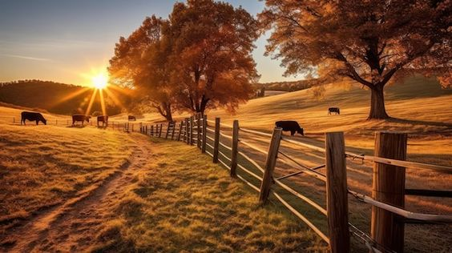

|
 |
O campo é compreendido pela zona rural, formado por propriedades rurais como: fazendas, chácaras e sítios. O campo pertence ao setor primário responsável pela produção de matéria prima como: leite, ovos, carnes, algodão, lã, cereais, etc. O setor secundário é formado pela indústria. Na indústria a matéria prima é transformada em produtos como: iogurte, queijo, manteiga, sapato, roupas, automóveis, etc.No campo são realizadas atividades primárias relacionadas com a obtenção de matérias a partir de recursos naturais ou de animais e vegetais.O setor primário é o responsável pela extração de recursos provenientes da natureza. É o setor que explora o meio ambiente para produzir itens para o consumo ou que serão vendidos. Extração de petróleo, agricultura, extrativismo vegetal e animal, pesca e pecuária são as atividades de destaque do setor primário.Normalmente estão ligados à atividades de agrícolas (lavoura permanente, lavoura temporária, horticultura, etc.), mineração, pesca e silvicultura, pecuária, extrativismo vegetal, caça e obtenção de outros produtos sejam eles renováveis ou não.Neste setor da economia, as atividades econômicas irão obter o produto primário por meio de extração ou produção. No setor primário serão obtidas as matéria-primas para os outros setores. Apesar de ser fundamental, possui pouco valor agregado e não gera muitas riquezas aos países que exploram apenas modalidade econômica. |
|---|